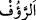
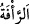
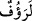
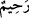
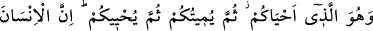
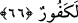

“Çünkü Allah, insanlara çok şefkatli ve çok merhametlidir.” çok şefkatli ve ihsan
edicidir. Çünkü onların geçim sebeplerini hazırlamış, onlara faydalanacakları kapıları
açmış, türlü zararları onlardan uzaklaştırmış, tekvînî ve tenzîlî âyetlerle istidlâl
yollarını onlara açıklamıştır. “__WORD__ rahîm mânâsınadır. Ya da “__WORD__ rahmetin daha
şiddetlisi ve daha incesidir. Nitekim el-Kâmûs’ta böyle denilmektedir.
Bahru’l-ulûm’da der ki: “__WORD__ yâni kullarının yükünü hafifletmeyi murad edendir. “__WORD__ onlara nîmetler bahşetmek isteyendir.”
66. O, (önce) size hayat veren, sonra sizi öldürecek, sonra yine diriltecek olandır.
Gerçekten insan, çok nankördür.
Bu sûrenin başında açıklandığı üzere cansız varlıklar, unsurlar ve nutfeler iken “O,
(önce) size hayat veren, sonra” ecelleriniz geldiğinde “sizi öldürecek, sonra” ba‘s
sırasında “yine diriltecek olandır. Gerçekten insan, çok nankördür.” Yâni gayet âşikar
olduğu halde nimetleri inkâr eder ve gerçek nimet verene ibâdet etmez. Bu ifâde, bir
cinsi onun bazı ferdlerinin vasfıyla vasfetme kabîlindendir.
Cüneyd (k.s.) der ki: “Allah size ma‘rifetiyle hayat verdi. Sonra gaflet ve fetret
zamanlarında sizi öldürür. Sonra fetretin ardından cezb ile sizi diriltir. Sonra sizi
herkesten ve her şeyden keser ve kendisine ulaştırır. Hakikaten insan nankördür. Lehine
olanı hatırlar, aleyhine olanı unutur.
Bilesin ki Allah Teâlâ insanı değerli kıldı, şânını yüceltti. Onu cansız varlıklar
âleminden bitkiler âlemine, oradan da canlılar âlemine nakletti. Onu konuşan bir varlık
kıldı. Maddî ve mânevî nîmetlerle donattı. Mevcûdâtı onun hizmetine verdi. Elbette
insanın Allah’ın bu lütuflarına şükretmesi gerekir.
Şükür, nimeti ızhâr etmek ve ortaya çıkarmaktır. Zıddı küfrandır, nankörlüktür. Küfrân,
nimeti örtmek ve gizlemektir. Her nimet, nimeti vereni tanımaya giden bir yoldur. Çünkü
nimet O’nun eseridir. Eserden müessire gitmek lâzımdır. İşte bu yakînî îmandır.
Kudsî hadîste:
“Ben gizli bir hazîne idim. Bilinmeyi sevdim. Mahlûkâtı yarattım. Nimetleri onlara
sevdirdim ki (bu sâyede) beni tanısınlar”[49] buyrulmuştur.
Şu halde akıllıya gereken nîmetlere ve zenginliğe aldanmamak, her halde Allah’ın
tevfîkini düşünmektir.
Bir haberde nakledildiğine göre Allah Teâlâ, Peygamber (s.a.)’e şöyle buyurmuştur:
“Güçlü kimseye de ki: ‘Gücün seni kendini beğenmeye götürmesin. Gücün seni